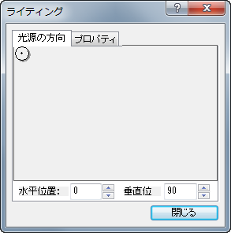
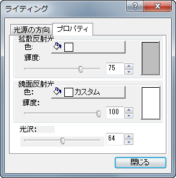

ライティングダイアログはライティングタブの道具です。ダイアログを開くには、3DOpenGLグラフをアクティブにし、スタイルツールバーのライティング制御ダイアログボタン
ライティングダイアログはライティングタブの道具です。ダイアログを開くには、3DOpenGLグラフをアクティブにし、スタイルツールバーのライティング制御ダイアログボタン をクリックします。
をクリックします。
内容 |

光源の方向をコントロールするには、次の方法で行います。
グラフィカルコントロールボタンをクリックし、自由に動かします。
または
水平位置と垂直位置に数字を入力します。
光源のデフォルト位置は水平位置は0で垂直位置は90です。
光源の取る事ができる数値の範囲は、水平位置では0から360で、垂直位置では90から-90です。
水平位置=0は水平位置=360と同じ意味です。

拡散反射光の効果を切り替えるには、次の操作を行います。
色と輝度の合わさった効果は、プレビュー画面で同時に確認でき、また元のグラフ上でもリアルタイムに効果を確認できます。
デフォルトの色は白で、デフォルトの輝度は100です。
鏡面反射光の効果を切り替えるには、次の操作を行います。
デフォルトの色は黒で、輝度は0、光沢は64です。